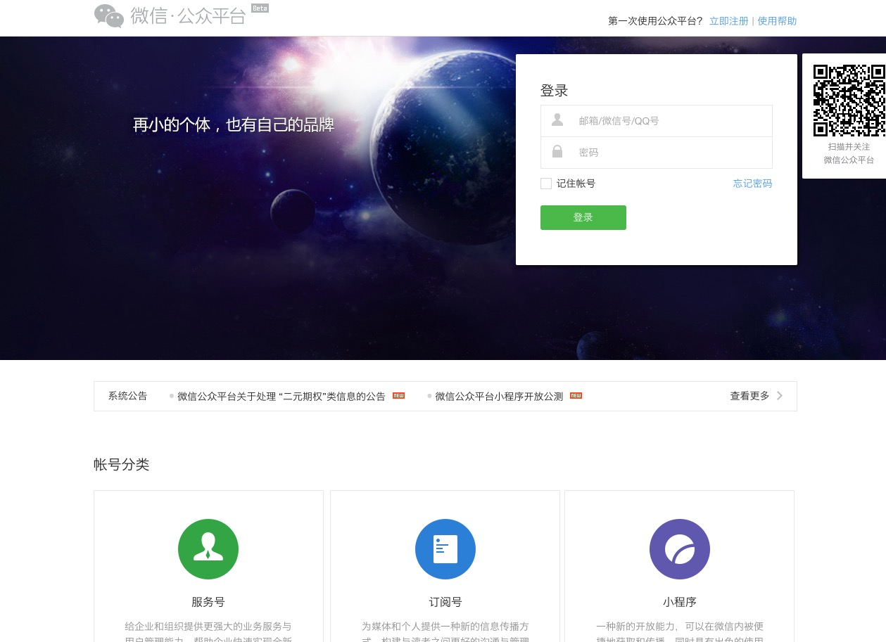
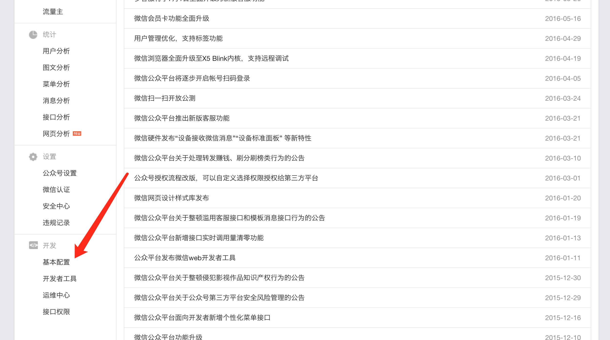

在进行微信公众平台开发之前，需要先接入微信公众平台。具体的步骤在 公众平台开发者文档-接入指南 已有详细介绍，文档中也提供了验证服务器的 PHP 示例代码。
本文主要提供了 Node.js 版本的验证代码，同时把步骤细化，让开发者更方便地了解整个接入过程，对初学者更友好。
TL;DR 🔗
在微信公众平台后台的 开发者中心/填写服务器配置 页面，配置好 URL 和 Token 后，复制下面的代码，修改 Token，在服务器运行，然后再在页面上点击提交即可进行接入验证。
// checkSignature.js
/**
* 整个验证步骤分为三步
* 1. 将token、timestamp、nonce三个参数进行字典序排序
* 2. 将三个参数字符串拼接成一个字符串进行sha1加密
* 3. 开发者获得加密后的字符串可与signature对比，标识该请求来源于微信
*/
const http = require('http');
const url = require('url');
const crypto = require('crypto');
// Web 服务器端口
const port = 3333;
// 微信公众平台服务器配置中的 Token
const token = 'token';
/**
* 对字符串进行sha1加密
* @param {string} str 需要加密的字符串
* @return {string} 加密后的字符串
*/
function sha1(str) {
const md5sum = crypto.createHash('sha1');
md5sum.update(str);
const ciphertext = md5sum.digest('hex');
return ciphertext;
}
/**
* 验证服务器的有效性
* @param {object} req http 请求
* @param {object} res http 响应
* @return {object} 验证结果
*/
function checkSignature(req, res) {
const query = url.parse(req.url, true).query;
console.log('Request URL: ', req.url);
const signature = query.signature;
const timestamp = query.timestamp;
const nonce = query.nonce;
const echostr = query.echostr;
console.log('timestamp: ', timestamp);
console.log('nonce: ', nonce);
console.log('signature: ', signature);
// 将 token/timestamp/nonce 三个参数进行字典序排序
const tmpArr = [token, timestamp, nonce];
const tmpStr = sha1(tmpArr.sort().join(''));
console.log('Sha1 String: ', tmpStr);
// 验证排序并加密后的字符串与 signature 是否相等
if (tmpStr === signature) {
// 原样返回echostr参数内容
res.end(echostr);
console.log('Check Success');
} else {
res.end('failed');
console.log('Check Failed');
}
}
const server = http.createServer(checkSignature)
server.listen(port, () => {
console.log(`Server is runnig ar port ${port}`);
console.log('Start Checking...');
});
填写服务器配置 🔗
登录进入微信公众平台后台管理页面

然后进入 基本配置 页面

再然后选择 修改配置，进入到 填写服务器配置 子页面
- URL 为已经解析到你的服务器的域名，这里以 http://wechat.nodejh.com 这个二级域名为例
- Token 随意填写即可
验证服务器地址的有效性 🔗
验证服务器地址的有效性，需要在域名对应的服务器上运行一段验证程序。该程序会接收上个步骤中的域名所发送的 HTTP 请求。
官方文档提供了 PHP 的示例程序，下面是 Node.js 版本：
// checkSignature.js
/**
* 整个验证步骤分为三步
* 1. 将token、timestamp、nonce三个参数进行字典序排序
* 2. 将三个参数字符串拼接成一个字符串进行sha1加密
* 3. 开发者获得加密后的字符串可与signature对比，标识该请求来源于微信
*/
const http = require('http');
const url = require('url');
const crypto = require('crypto');
// Web 服务器端口
const port = 3333;
// 微信公众平台服务器配置中的 Token
const token = 'token';
/**
* 对字符串进行sha1加密
* @param {string} str 需要加密的字符串
* @return {string} 加密后的字符串
*/
function sha1(str) {
const md5sum = crypto.createHash('sha1');
md5sum.update(str);
const ciphertext = md5sum.digest('hex');
return ciphertext;
}
/**
* 验证服务器的有效性
* @param {object} req http 请求
* @param {object} res http 响应
* @return {object} 验证结果
*/
function checkSignature(req, res) {
const query = url.parse(req.url, true).query;
console.log('Request URL: ', req.url);
const signature = query.signature;
const timestamp = query.timestamp;
const nonce = query.nonce;
const echostr = query.echostr;
console.log('timestamp: ', timestamp);
console.log('nonce: ', nonce);
console.log('signature: ', signature);
// 将 token/timestamp/nonce 三个参数进行字典序排序
const tmpArr = [token, timestamp, nonce];
const tmpStr = sha1(tmpArr.sort().join(''));
console.log('Sha1 String: ', tmpStr);
// 验证排序并加密后的字符串与 signature 是否相等
if (tmpStr === signature) {
// 原样返回echostr参数内容
res.end(echostr);
console.log('Check Success');
} else {
res.end('failed');
console.log('Check Failed');
}
}
const server = http.createServer(checkSignature)
server.listen(port, () => {
console.log(`Server is runnig ar port ${port}`);
console.log('Start Checking...');
});
因为验证要使用 80(HTTP) 端口或 443(HTTPS) 端口，而 Node.js 一般不直接监听 80 端口，所以需要使用 Nginx 或其他程序将来自 http://wechat.nodejh.com 的请求转发到 Node.js 程序端口如上面的 3333。关于 Nginx 的配置，可以看我之前写的《使用 Ngnix 给 Node.js 应用做反向代理》。
这里也顺便给出该程序的 Nginx 配置
upstream nodejs {
server 127.0.0.1:3333;
keepalive 64;
}
server {
listen 80;
server_name wechat.nodejh.com;
# 日志
access_log /var/log/nginx/wechat.nodejh.com.log;
location / {
proxy_set_header X-Real-IP $remote_addr;
proxy_set_header X-Forwarded-For $proxy_add_x_forwarded_for;
proxy_set_header Host $http_host;
proxy_set_header X-Nginx-Proxy true;
proxy_set_header Connection "";
proxy_pass http://nodejs;
}
}
配置就绪之后，启动验证程序
$ node checkSignature.js
Server is runnig ar port 3333
Start Checking...
这样，checkSignature.js 就会创建一个 3333 端口的服务。访问 http://wechat.nodejh.com 这个域名的时候，Nginx 就会将请求转发到 3333 端口。
在微信公众平台后台管理的服务器配置页面，点击提交按钮，就会填写的 URL （这里是 http://wechat.nodejh.com）发送一个 HTTP 请求，并带上 signature,timestamp,nonce,echostr 这四个参数。
启动 checkSignature.js 后，在服务器配置页面，点击提交按钮，就会开启验证。
服务器端出现下面的结果，就说明验证成功。验证成功后，微信公众平台后台会自动跳转到 基本配置 页面。
# 服务端响应...
signature: 8fffb8f011d64819ec61105415114694bb03d392
Sha1 String: 8fffb8f011d64819ec61105415114694bb03d392
Check Success
然后就可以依据接口文档实现业务逻辑了。
后续我也还会更新一些关于微信公众平台开发的文章，欢迎关注。
Github Issue: https://github.com/nodejh/nodejh.github.io/issues/24